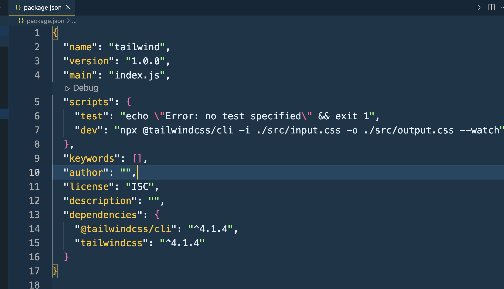
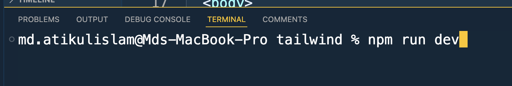

Node manage
Tailwind insatall By cli
- npm init -y
- npm install tailwindcss @tailwindcss/cli
-
একটি src ফোল্ডার বানিয়ে তার ভিতর input.css ফাইল তৈরি করুন এবং তার ভিতরে @import "tailwindcss"; রাখুন এবং সেভ করুন।
- npx @tailwindcss/cli -i ./src/input.css -o ./src/output.css --watch
-
এসএসসি ফোল্ডারের ভিতরে index.html ফাইল বানিয়ে। তাতে
-
Note: এখন আমরা input.css এর ভিতরে আমাদের কাস্টম সিএসএস কোড রাখবো।
- যদি আমরা terminal অথবা vs -code ক্লোজ করি। তারপরে যদি আবার নতুন করে কাস্টম কোড লিখি তাহলে সেটি কাজ করবেন না।
-
নিম্নের কমান্ডটি আবার রান করলে কাজ করবে: npx @tailwindcss/cli -i ./src/input.css -o ./src/output.css --watch
সহজ উপায়: node run dev - Video